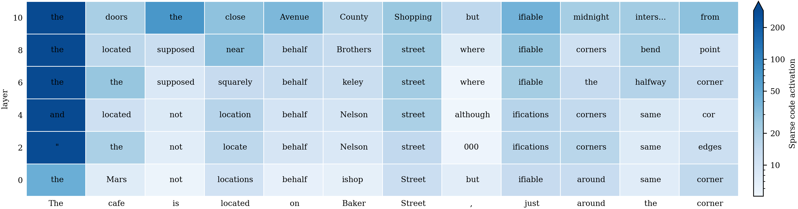
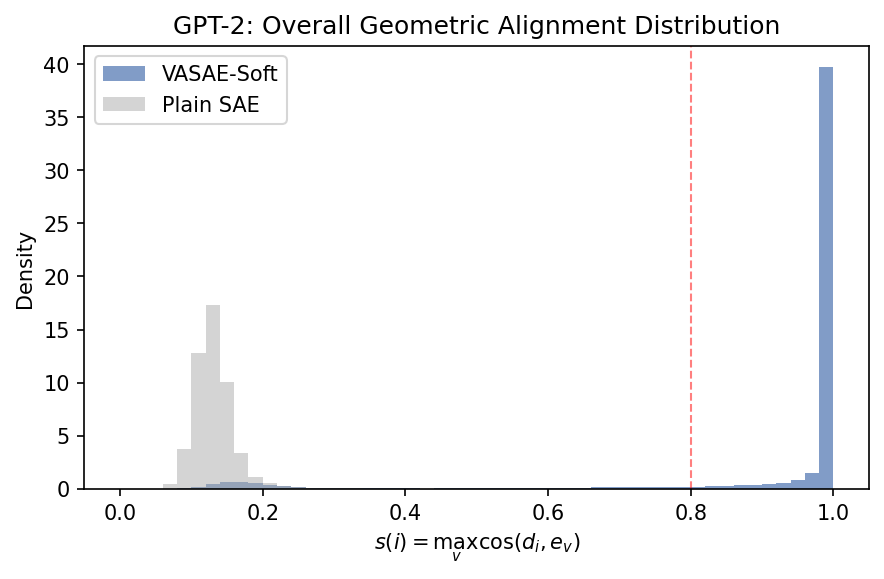
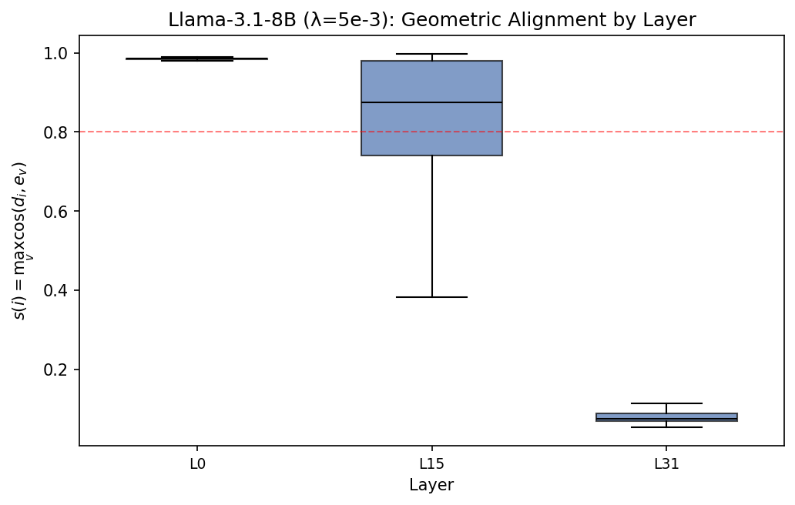

Standard SAE
- Residual stream
- Sparse code
- Learned dictionary direction
- Post-hoc feature name
Use VASAE when citing training-time SAE feature naming via vocabulary-aligned dictionary directions. The method keeps SAE dictionary directions learnable, anchors them to fixed token embeddings, and names aligned features by nearest-token lookup.
Why VASAE?
Standard sparse autoencoders decompose residual-stream activations into sparse feature directions. Those directions are usually named after training by inspecting top-activating contexts or using automated explanation tools.
VASAE turns feature naming into a reconstruction-preserving geometric alignment problem: keep the dictionary learnable, but pull feature directions toward fixed token-embedding anchors.
Scope: an intrinsic token name is the nearest vocabulary anchor for a learned dictionary direction. It is not a full semantic explanation or a causal claim.
Method in one picture
The decoder remains learnable. Token embeddings act as fixed vocabulary anchors, not as frozen decoder features. This matters because the hard-tied decoder baseline loses reconstruction quality.
What VASAE gives you
We study whether learned SAE dictionary directions can receive intrinsic nearest-token names during training rather than only after inspection.
The decoder remains learnable. A soft anchor objective pulls dictionary directions toward fixed token embeddings without freezing the decoder to the vocabulary matrix.
VASAE-Soft preserves reconstruction in the reported runs. GPT-2 alignment is strong through most layers; Llama alignment is stronger in shallow layers than final layers.
Explore VASAE
Each figure shows the top aligned feature token selected at each token position after sentence-level sparse-code centering. The point is not that every token is explained; the point is that dictionary directions can acquire checkable vocabulary anchors.
In the GPT-2 `place_street` example, token names such as street and location-related words appear around `Baker Street`, `located`, and nearby place phrases.
What to look for: local clusters of readable token names, not a sentence-level proof that the model causally uses the named concept.

Figures from the paper
The figure set keeps each plot to one takeaway so the page supports navigation instead of repeating the full paper.

GPT-2 VASAE-Soft shifts many dictionary directions above the strong token-alignment threshold.
View
Llama-3.1-8B shows strong shallow-layer alignment but unstable final-layer alignment.
ViewCase-study heatmaps let readers inspect nearest-token names in context.
Explore mapHow to describe VASAE
VASAE trains sparse autoencoder dictionary directions with a soft vocabulary-anchor objective, producing nearest-token names for many learned features while preserving reconstruction quality.
Claim Boundary
The intrinsic token name is the token whose embedding is nearest to a learned SAE dictionary direction. It is a vocabulary-level geometric label.
Citation
If VASAE helps you discuss SAE feature naming, vocabulary-aligned dictionary learning, or alternatives to post-hoc interpretation, please cite the preprint version below.
@misc{vasae2025,
title = {VASAE: Vocabulary-Aligned Sparse Autoencoders},
author = {VASAE authors},
year = {2025},
url = {https://github.com/karry-z/VASAE}
}
Citation metadata will be updated after the formal version is available.
{kind=link}
{kind=link}